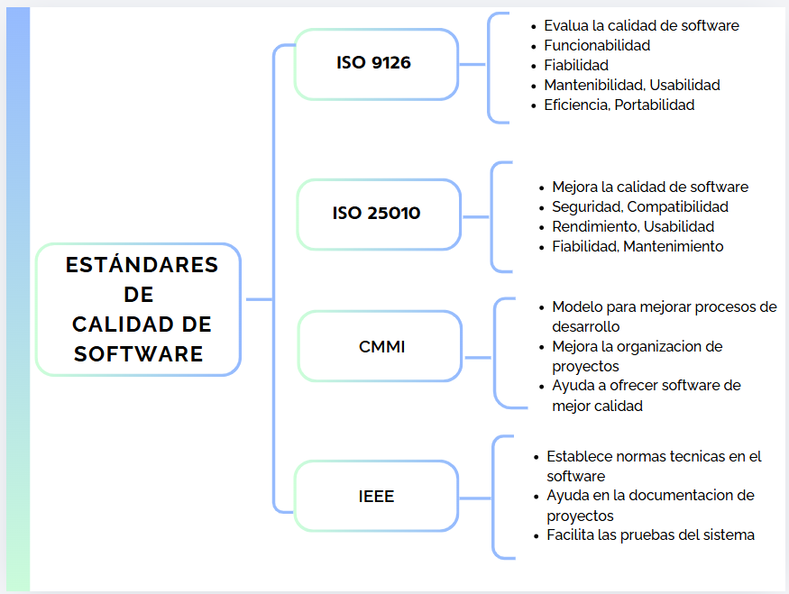

Es la norma más utilizada para evaluar la calidad del software. Define características como funcionalidad, rendimiento, seguridad, usabilidad, compatibilidad, mantenibilidad y confiabilidad.
Es una norma internacional de gestión de calidad que ayuda a las organizaciones a mejorar sus procesos y garantizar la satisfacción de los usuarios.
Es un modelo de madurez que permite mejorar continuamente los procesos de desarrollo de software mediante cinco niveles de madurez.
Es un estándar que establece cómo elaborar planes de aseguramiento de calidad para garantizar que el software cumpla los requisitos.
Las normas de calidad ayudan a desarrollar software confiable, seguro y eficiente, mientras que los grandes errores de la historia demuestran la importancia de aplicar buenas prácticas de calidad.
Realizar un cuadro sinóptico sobre los estándares de la calidad de software.
